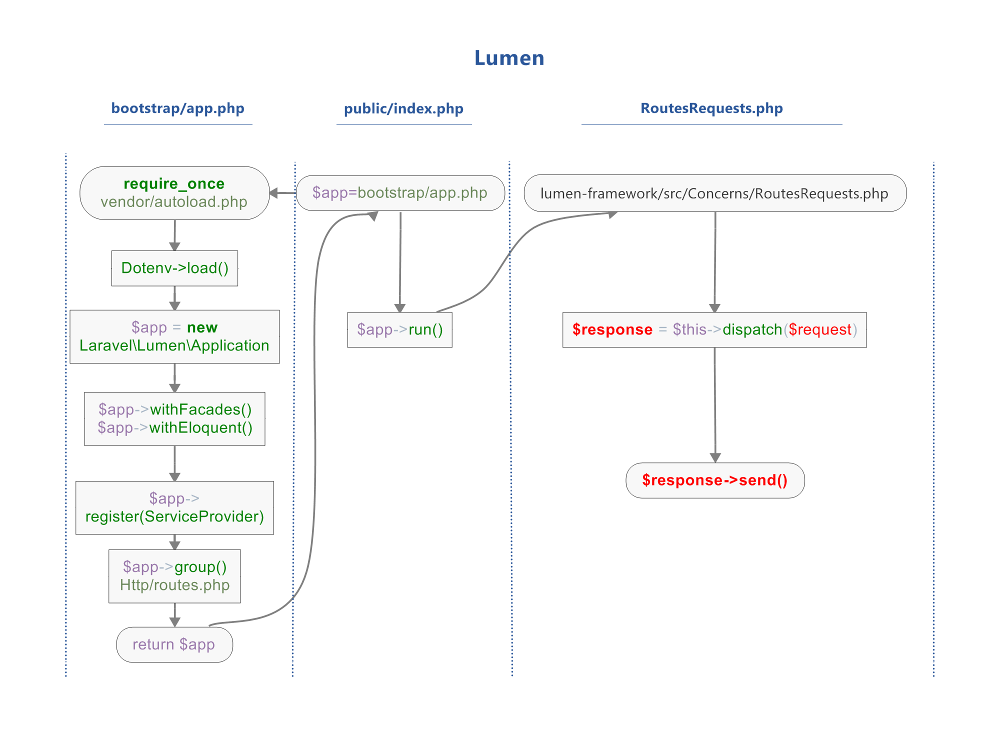

Lumen Framework Request Lifecycle Flow
Key Components
| Stage | Description |
|---|---|
| Public Index | Entry point of the application |
| Application | Bootstrap and service container setup |
| Kernel | HTTP request handling and middleware |
| Router | Route matching and dispatching |
Request Flow
- HTTP Request enters application
- Bootstrap application services
- Load service providers
- Process middleware stack
- Route matching and controller dispatch
- Response generation
- Return HTTP Response
Key Features
- Fast and lightweight framework
- Service container architecture
- Middleware support
- Eloquent ORM (optional)
- RESTful routing